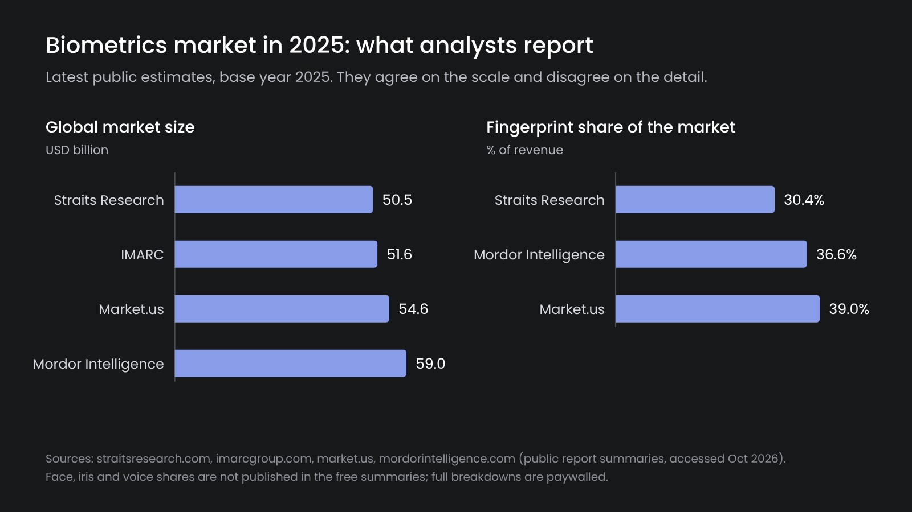
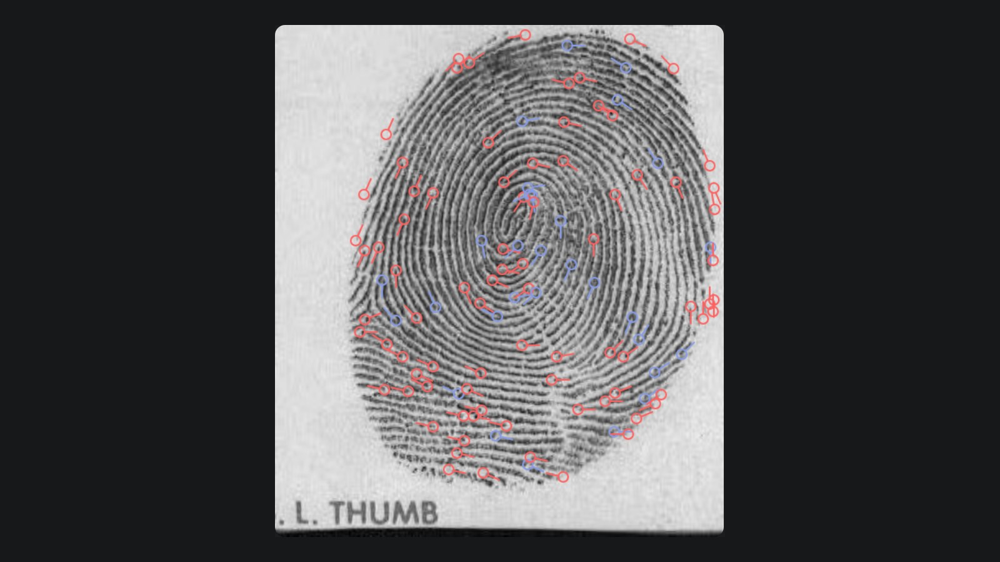
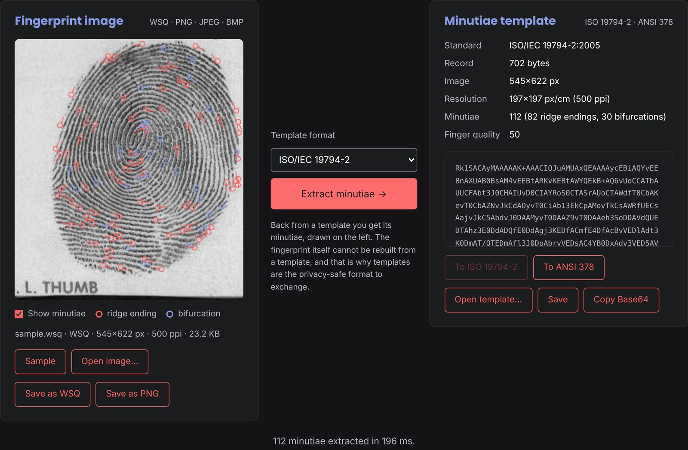

Biometric Authentication: Modalities, Templates and Lock-in
Biometric authentication checks who someone is by something they are, not by something they know or carry. Every system does it the same way: capture a sample, reduce it to a template, compare templates. The biometric modality decides accuracy and cost. The template format decides something less obvious: whether the organization will ever be able to change its supplier. Using biometrics in a business process often means a vendor lock, and this is the problem we have been working on at Iriscan for years.
The three modalities that matter
Face. It works with any camera, which makes it the default choice for phones and self-service. A neural network turns an aligned face into an embedding, a vector of a few hundred numbers, and two faces match when their vectors are close. Face is good for 1:1 verification and weaker for searching large databases. It also needs liveness detection, since a photo of a face is easy to get.
Fingerprint. The most widely deployed modality, with forty years of standards behind it. Templates store minutiae: the points where ridges end or split, with their positions and angles. Fingerprint is accurate and cheap to capture, but the quality drops for manual workers and the elderly, and contact sensors need cleaning.
Iris. The most distinctive of the three. A near-infrared camera captures the iris texture, which is encoded into a bit string and compared by Hamming distance. Iris is the best choice for de-duplicating large populations, it is contactless and stable over life, but it needs a dedicated scanner. Details are in how iris recognition works.
Voice, vein and behavioral biometrics exist and have their niches. Still, national ID, banking and humanitarian programs are built almost entirely on these three, often combined.

Templates, not images
After enrollment, a biometric system mostly works with templates. A fingerprint template is a list of minutiae, an iris template is a bit string with a mask, a face template is an embedding. Templates are small and fast to compare, and they cannot be turned back into the original image. This way they are the safer thing to store and to exchange.
This raises the question that decides the long-term cost of the system: in which format are the templates stored?

Where the vendor lock comes from
Many vendors store templates in their own format which only their matcher reads. As long as the customer stays, it works. But what happens when the customer wants a better matcher, a cheaper scanner or a second supplier? The database turns out to be useless to anyone else, and the choice is between re-enrolling everyone and paying further.
The solution has existed for years: international standards for biometric data interchange.
- Fingerprint minutiae: ISO/IEC 19794-2 and ANSI INCITS 378;
- Face images: ISO/IEC 19794-5;
- Iris images: ISO/IEC 19794-6;
- and the newer ISO/IEC 39794 series, which replaces them with an extensible encoding.
Even within the standards, details differ. ISO stores minutia angles in units of about 1.4°, ANSI in units of 2°, and coordinates depend on the declared resolution. Converting correctly between them is fiddly but routine, and it should not require a license.

On the device or on the server
Matching on the user's phone keeps biometric data off your servers, works offline and costs nothing per check. This is the right choice for 1:1 verification in an app. Searching a database (1:N) has to happen where the database is, on your servers or in a trusted service. Most real systems combine both: they enroll once with a search for duplicates, and then verify on the device.
What we build
Our open-source components use standard formats everywhere. This way the data stays usable whichever matcher or scanner you choose later. The Biometric SDK does face, liveness and iris on Android, iOS, JVM and React Native. The Biometric Converter turns fingerprint images into ISO or ANSI templates and converts templates between the two formats; it runs as a C library, as a Docker service or in the browser. The Cloud Iris API handles iris enrollment and search.